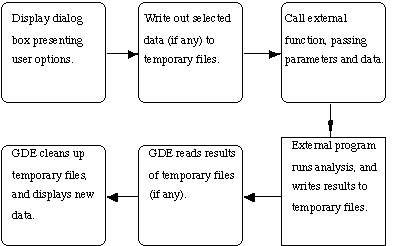

The GDE uses a menu description language to define what external programs
it can call, and what parameters and data to pass to each function. This
language allows users to customize their own environment to suite individual
needs.
The following is how the GDE handles external programs when selected from
a menu:

Each step in this process is described in a file .GDEmenus in the user's
current or home directory.
The language used in this file describes three phases to an external function
call. The first phase describes the menu item as it will appear, and the
Unix command line that is actually run when it is selected. The second phase
describes how to prompt for the parameters needed by the function. The third
phase describes what data needs to be passed as input to the external function,
and what data (if any) needs to be read back from its output.
The form of the language is a simple keyword/value list delimited by the
colon (:) character. The language retains old values until new ones are
set. For example, setting the menu name is done once for all items in that
menu, and is only reset when the next menu is reached.
The keywords for phase one are:
The keywords for phase two are:
The keywords for phase three are as follows:
Here is a sample dialog box, and it's entry in the .GDEmenus file:
Fig.
Using the default parameters given in the dialog box, the executed Unix
command line would be:
(tr '[a-z]' '[A-Z]' < .gde_001 >.gde_001.tmp ; mv .gde_001.tmp
CAPS ; gde CAPS -Wx medium ; rm .gde_001 ) &
where .gde_001 is the name of the temporary file generated by the GDE which
contains the selected sequences in flat file format. Since the GDE runs
this command in the background ('&' at the end) it is necessary to specify
the insave: line, and to remove all temporary files manually. There is no
output file specific because the data is not loaded back into the current
GDE window, but rather a new GDE window is opened on the file. A simpler
command that reloads the data after conversion might be:
item:All caps
itemmethod:tr '[a-z]' '[A-Z]' OUTPUT
in:INPUT
informat:flat
out:OUTPUT
outformat:flat
In this example, no arguments are specified, and so no dialog box will appear.
The command is not run in the background, so the GDE can clean up after
itself automatically. The converted sequence is automatically loaded back
into the current GDE window.
In general, the easiest type of program to integrate into the GDE is a program
completely driven from a Unix command line. Interactive programs can be
tied in (MFOLD for example), however shell scripts must be used to drive
the parameter entry for these programs. Programs of the form:
program_name -a1 argument1 -a2 arguement2 -f inputfile -er errorfile
> outputfile
can be specified in the .GDEmenus file directly. As this is the general
form of most one Unix commands, these tend to be simpler to implement under
the GDE.
As functions grow in complexity, they may begin to need a user interface
of their own. In these cases, the command line calling arguments are still
necessary in order to allow the GDE to hand them the appropriate data, and
possible retrieve results after some external manipulation.